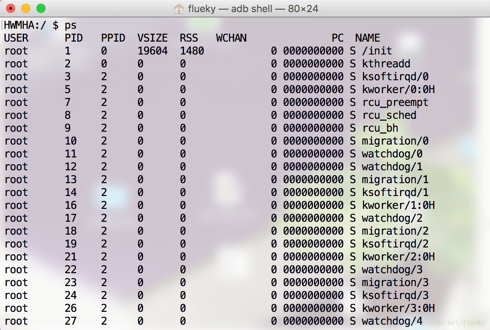
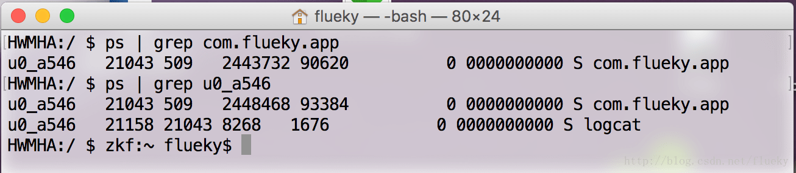

之前写过一篇日志，[《不是安卓工程师，也能看logcat日志》](/228)，不仅需要adb环境还要熟悉logcat命令，感觉比较繁琐。现推出升级版，在Service中保存日志服务。同样用到命令logcat -f logpath。在这之前，已有人造过同样的轮子。只是代码更长，功能更完善。比如：监听日志文件大小，超出10M就重新生成日志文件。个人认为，这些功能有些画蛇添足。试问，有谁会从10M日志文件中去找调试信息。so，出一个简化版，方便阅读、方便理解。
1 PS命令
此PS，非PhotoShop。熟悉linux 都知道，ps 命令可以list出系统中所有正在运行的线程。

图示是在adb shell中，list出当前连接设备正在运行的所有进程信息。

grep参数做过滤操作，之前在查看指定pid的日志中有提过。（Android 7.0 开始logcat 支持pid 筛选，如：logcat --pid=进程id）。从上图中，可以看出：
进程A 创建进程B
A.USER == B.USER
A.PID == B.PPID
同样，进程A创建的logcat进程只能保存进程A 的全部日志，执行的PS命令只能list出同USER属性相同的进程。
2 保存日志
1
2
3
4
5
6
7
8
9
10
11
12
|
private void startSaveLog() {
try {
Runtime.getRuntime().exec("logcat -f " + logFilePath);
logcatInfo = getLogcatProInfo(getProcessInfoStr("logcat"));
} catch (IOException e) {
e.printStackTrace();
}
}
|
3 清除日志缓存
1
2
3
4
5
6
7
8
9
10
11
|
private void clearLogCache() {
try {
Runtime.getRuntime().exec("logcat -c");
} catch (IOException e) {
e.printStackTrace();
}
}
|
在开始保存日志前调用，清除之前已经输出的日志。
4 关闭进程
1
2
3
4
5
6
7
8
9
10
11
12
13
|
private void killLogcat() {
if (logcatInfo == null)
return;
try {
Runtime.getRuntime().exec("kill " + logcatInfo.pid);
} catch (IOException e) {
e.printStackTrace();
}
}
|
可以在任意位置发送广播，停止保存日志。
5 广播控制日志保存和关闭
1
2
3
4
5
6
7
8
9
10
11
12
13
14
15
|
class SaveLogReceiver extends BroadcastReceiver {
@Override
public void onReceive(Context context, Intent intent) {
if (intent.getAction().equals(KILL_LOGCAT_ACTION)) {
killLogcat();
} else if (intent.getAction().equals(START_LOGCAT_ACTION)) {
clearLogCache();
startSaveLog();
}
}
}
|
同样，可以在任意地方重开始，继续保存日志。这样可以有效避免保存了无用的日志信息，使日志内容又臭又长。
6 获取当前应用的进程信息
1
2
3
4
5
6
7
8
9
10
11
12
13
14
15
16
17
18
19
20
21
22
23
24
25
26
27
28
29
30
31
32
33
34
35
36
37
38
39
40
41
42
43
44
45
46
47
48
49
50
51
52
53
54
55
56
57
58
59
60
61
62
63
64
65
66
67
68
69
70
71
72
73
74
75
| appProInfo = new ProcessInfo(getProcessInfoStr(getPackageName()).get(0));
private ArrayList<String> getProcessInfoStr(String name) {
ArrayList<String> strs = new ArrayList<String>();
try {
java.lang.Process process = Runtime.getRuntime().exec("ps");
InputStream is = process.getInputStream();
InputStreamReader isr = new InputStreamReader(is);
BufferedReader br = new BufferedReader(isr);
String line = null;
while ((line = br.readLine()) != null) {
if (line.endsWith(name)) {
strs.add(line);
}
}
br.close();
isr.close();
is.close();
br = null;
isr = null;
is = null;
} catch (IOException e) {
e.printStackTrace();
}
return strs;
}
class ProcessInfo {
private String user;
private String pid;
private String ppid;
private String vsize;
private String rss;
private String wchan;
private String pc;
private String name;
public ProcessInfo(String info) {
if (info == null)
return;
ArrayList<String> item = new ArrayList<String>();
for (int i = 0; i < info.length(); i++) {
if (info.charAt(i) == ' ') {
continue;
}
int j = i + 1;
while (j < info.length() && info.charAt(j++) != ' ') ;
item.add(info.substring(i, j - 1));
i = j - 1;
}
user = item.get(0);
pid = item.get(1);
ppid = item.get(2);
vsize = item.get(3);
rss = item.get(4);
wchan = item.get(5);
pc = item.get(6);
name = item.get(8);
}
}
|
7 使用方法
- 在AndroidManife.xml里注册Service
- 启动Service，开始保存日志
- 发送广播，停止保存日志
- 发送广播，继续保存日志
最后附上源码：
1
2
3
4
5
6
7
8
9
10
11
12
13
14
15
16
17
18
19
20
21
22
23
24
25
26
27
28
29
30
31
32
33
34
35
36
37
38
39
40
41
42
43
44
45
46
47
48
49
50
51
52
53
54
55
56
57
58
59
60
61
62
63
64
65
66
67
68
69
70
71
72
73
74
75
76
77
78
79
80
81
82
83
84
85
86
87
88
89
90
91
92
93
94
95
96
97
98
99
100
101
102
103
104
105
106
107
108
109
110
111
112
113
114
115
116
117
118
119
120
121
122
123
124
125
126
127
128
129
130
131
132
133
134
135
136
137
138
139
140
141
142
143
144
145
146
147
148
149
150
151
152
153
154
155
156
157
158
159
160
161
162
163
164
165
166
167
168
169
170
171
172
173
174
175
176
177
178
179
180
181
182
183
184
185
186
187
188
189
190
191
192
193
194
195
196
197
198
199
200
201
202
203
204
205
206
207
208
209
210
211
212
213
214
215
216
217
218
219
220
221
222
223
224
225
226
227
228
229
230
231
232
233
234
235
236
237
238
239
240
|
public class SaveLogService extends Service {
private String logFoldPath;
private String logFilePath;
public static final String KILL_LOGCAT_ACTION = "com.flueky.action.kill_logcat";
public static final String START_LOGCAT_ACTION = "com.flueky.action.start_logcat";
private ProcessInfo appProInfo;
private ProcessInfo logcatInfo;
private SaveLogReceiver saveLogReceiver;
@Nullable
@Override
public IBinder onBind(Intent intent) {
return null;
}
@Override
public void onCreate() {
super.onCreate();
logFoldPath = getExternalCacheDir().getAbsolutePath() + "/../log";
saveLogReceiver = new SaveLogReceiver();
IntentFilter filter = new IntentFilter();
filter.addAction(KILL_LOGCAT_ACTION);
filter.addAction(START_LOGCAT_ACTION);
registerReceiver(saveLogReceiver, filter);
}
private boolean checkLogFolder() {
File file = new File(logFoldPath);
if (!file.exists()) {
return file.mkdirs();
}
return true;
}
@Override
public int onStartCommand(Intent intent, int flags, int startId) {
appProInfo = new ProcessInfo(getProcessInfoStr(getPackageName()).get(0));
clearLogCache();
startSaveLog();
return super.onStartCommand(intent, flags, startId);
}
@Override
public void onDestroy() {
super.onDestroy();
unregisterReceiver(saveLogReceiver);
}
private ArrayList<String> getProcessInfoStr(String name) {
ArrayList<String> strs = new ArrayList<String>();
try {
java.lang.Process process = Runtime.getRuntime().exec("ps");
InputStream is = process.getInputStream();
InputStreamReader isr = new InputStreamReader(is);
BufferedReader br = new BufferedReader(isr);
String line = null;
while ((line = br.readLine()) != null) {
if (line.endsWith(name)) {
strs.add(line);
}
}
br.close();
isr.close();
is.close();
br = null;
isr = null;
is = null;
} catch (IOException e) {
e.printStackTrace();
}
return strs;
}
private ProcessInfo getLogcatProInfo(ArrayList<String> logcatProcessInfos) {
if (logcatProcessInfos == null)
return null;
for (String infoStr : logcatProcessInfos) {
ProcessInfo info = new ProcessInfo(infoStr);
if (info.user.equals(appProInfo.user)) {
return info;
}
}
return null;
}
private void killLogcat() {
if (logcatInfo == null)
return;
try {
Runtime.getRuntime().exec("kill " + logcatInfo.pid);
} catch (IOException e) {
e.printStackTrace();
}
}
private void clearLogCache() {
try {
Runtime.getRuntime().exec("logcat -c");
} catch (IOException e) {
e.printStackTrace();
}
}
private void startSaveLog() {
try {
if (checkLogFolder())
logFilePath = logFoldPath + "/HH-" + new SimpleDateFormat("yyyyMMddHHmmss").format(Calendar.getInstance().getTime()) + ".log";
Runtime.getRuntime().exec("logcat -f " + logFilePath);
logcatInfo = getLogcatProInfo(getProcessInfoStr("logcat"));
} catch (IOException e) {
e.printStackTrace();
}
}
class ProcessInfo {
private String user;
private String pid;
private String ppid;
private String vsize;
private String rss;
private String wchan;
private String pc;
private String name;
public ProcessInfo(String info) {
if (info == null)
return;
ArrayList<String> item = new ArrayList<String>();
for (int i = 0; i < info.length(); i++) {
if (info.charAt(i) == ' ') {
continue;
}
int j = i + 1;
while (j < info.length() && info.charAt(j++) != ' ') ;
item.add(info.substring(i, j - 1));
i = j - 1;
}
user = item.get(0);
pid = item.get(1);
ppid = item.get(2);
vsize = item.get(3);
rss = item.get(4);
wchan = item.get(5);
pc = item.get(6);
name = item.get(8);
}
@Override
public String toString() {
StringBuffer buffer = new StringBuffer();
buffer.append(user).
append(" ").
append(pid).
append(" ").
append(ppid).
append(" ").
append(vsize).
append(" ").
append(rss).
append(" ").
append(wchan).
append(" ").
append(pc).
append(" ").
append(name);
return buffer.toString();
}
}
class SaveLogReceiver extends BroadcastReceiver {
@Override
public void onReceive(Context context, Intent intent) {
if (intent.getAction().equals(KILL_LOGCAT_ACTION)) {
killLogcat();
} else if (intent.getAction().equals(START_LOGCAT_ACTION)) {
clearLogCache();
startSaveLog();
}
}
}
}
|
觉得有用？那打赏一个呗。[去打赏](/donate/)